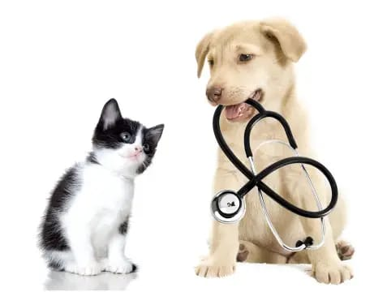
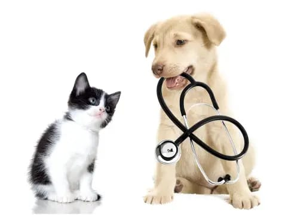

Clinica veterinaria 🐾garritas🐾
Proporcionamos atención médica y cuidados a tus mascotas en nuestra clinica y también si no pueden asistir a la misma
debido a
limitaciones físicas o de salud.
Estos servicios pueden incluir la administración de medicamentos, la realización de pruebas médicas, la asistencia con actividades diarias y el monitoreo de la salud de tu mascota.
🐾 El objetivo es mejorar la calidad de vida de las mascotas.🐾 
Estos servicios pueden incluir la administración de medicamentos, la realización de pruebas médicas, la asistencia con actividades diarias y el monitoreo de la salud de tu mascota.
🐾 El objetivo es mejorar la calidad de vida de las mascotas.🐾 
🐾🐾Conocenos🐾🐾
🐾Misión:🐾
Nuestra misión es brindar servicios de atención médica y asistencia a mascotas en su hogar o clinica para promover la independencia, el bienestar y la comodidad.
Nuestra misión es brindar servicios de atención médica y asistencia a mascotas en su hogar o clinica para promover la independencia, el bienestar y la comodidad.
🐾Visión:🐾
Nuestra visión es proporcionar atención médica de calidad en la clinica o en el hogar para mejorar la calidad de vida de tus mascotas.
Nuestra visión es proporcionar atención médica de calidad en la clinica o en el hogar para mejorar la calidad de vida de tus mascotas.
🐾Prestaciones🐾
 🐾Veterinarios a Domicilio🐾
A través de nuestros profesionales a domicilio brindamos atención a todo tipo de mascotas que no puedan asistir al centro
de salud y deban permanecer en sus hogares.🐕
🐾Veterinarios a Domicilio🐾
A través de nuestros profesionales a domicilio brindamos atención a todo tipo de mascotas que no puedan asistir al centro
de salud y deban permanecer en sus hogares.🐕
🐾 Enfermería🐾
Atención de enfermería para tus mascotas,
se realizan curaciones, control de signos vitales, aplicación de vacunas, administración de medicamentos.🐩
se realizan curaciones, control de signos vitales, aplicación de vacunas, administración de medicamentos.🐩
🐾 Kinesiología🐾
Brindamos terapia física y rehabilitación en el hogar de la mascota, con el objetivo de ayudarlo a
recuperarse
de lesiones
o afecciones médicas y mejorar su calidad de vida.🐕
🐾 Laboratorio🐾
Se realizan extracciones de sangre para análisis de laboratorio, toma de muestras e hisopados. Resultados:
Se
entregan vía on-line por email.🐇
🐾 Electrocardigrama🐾
Se realiza ECG a tus mascotas, con el informe realizado por un veterinario.🐈